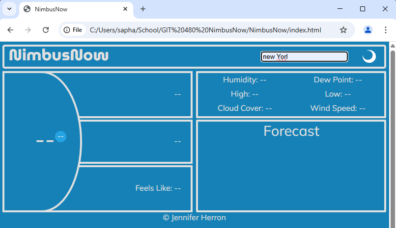
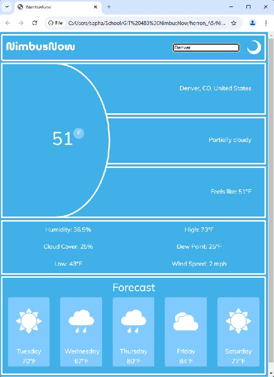
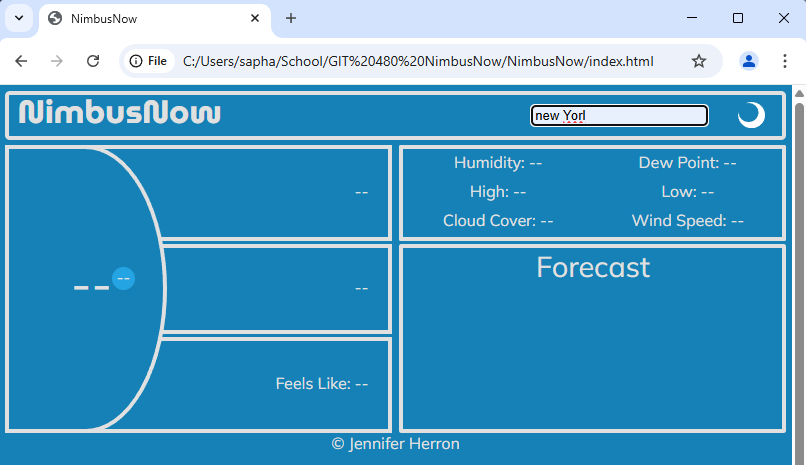
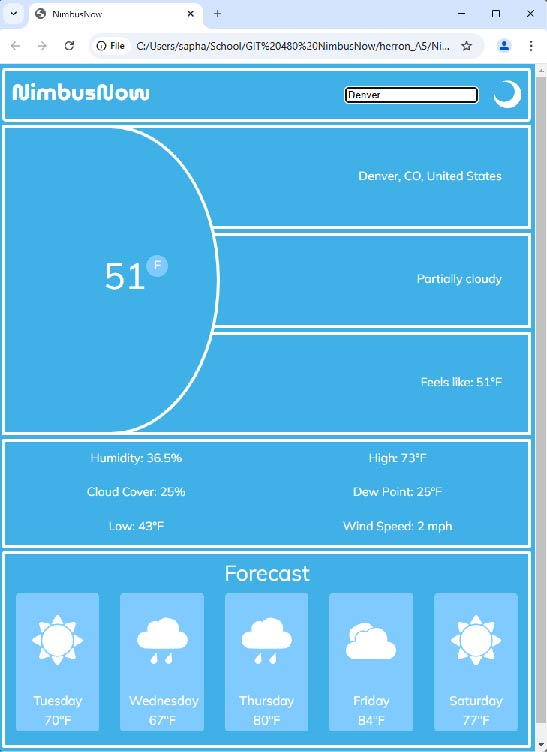

NimbusNow
 



The Weather Forecast App was developed to build a fully client-side web application that delivers accurate, real-time weather updates through a clean, user-friendly interface. The app focuses on accessiblity, responsiveness, and interactive features that make checking the weather more engaging and reliable.
Project Overview
The application allows users to search for any city and view both current weather conditions and a 5-day forecast. I fetchs live weather data from a public REST API, called OpenWeather, and presents the information in an organized and responsive layout. Beyond simple data display, the app includes interactive features like unit conversion (Celsius/Fahrenheit), a dark mode toggle, and dynamic forecast rendering for an enhanced user experience.
Building A Weather App
Using JavaScript, I integrated the API calls with asynchronous
programming to ensure smooth, non-blocking data retrieval. I
implemented error handling for invalid or unavailable city searches,
providing clear feedback to users. For the UI, I focused on responsive
layouts with HTML and CSS, making sure the design adapts seemlessly
across mobile and desktop devices. I also implemented a dark mode
feature for improved accessiblity and design the interface with usability
in mind, ensuring that forecasts are presented clearly and intuitively.
Frontend: JavaScript(ES6), HTML5, CSS3
APIs: OpenWeather
Version Control: Git, Github
Outcome
The Weather Forecast App demonstrates my ability to build an interactive, API-driven application entirely on the client side. It highlights skills in API integration, asynchronous programming, DOM manipulation, and responsive design. This project also reflects my focus on user experience, with features that make the app accessible, customizable, and visually appealing.